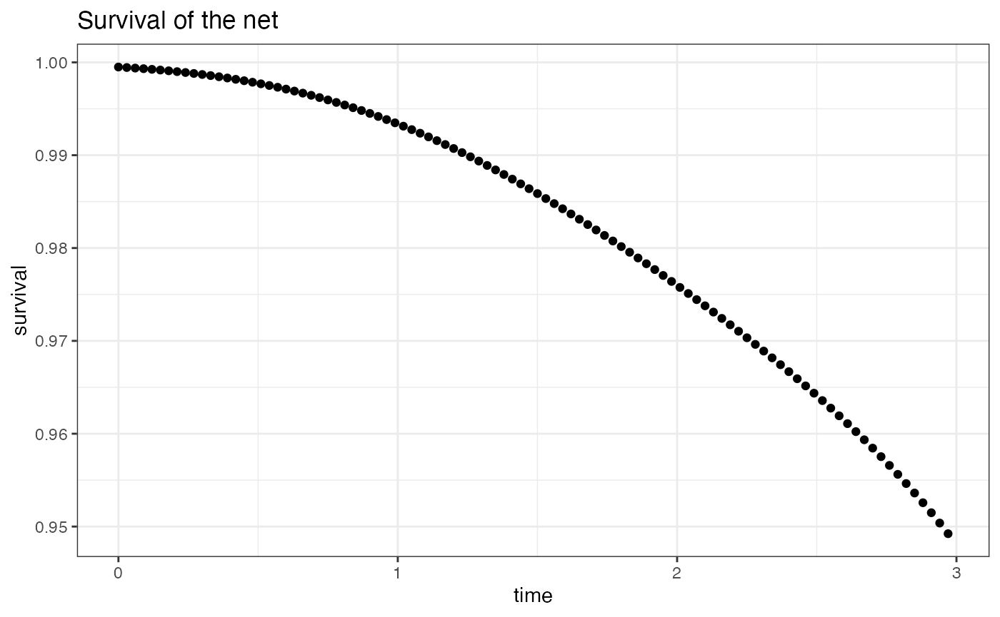
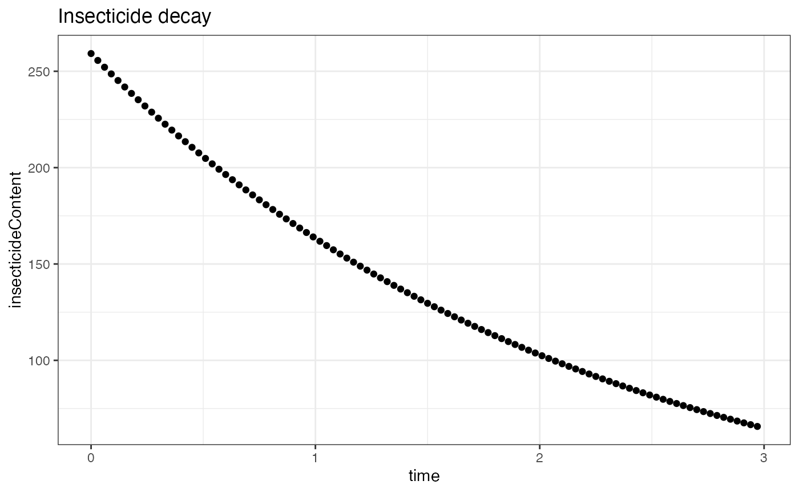
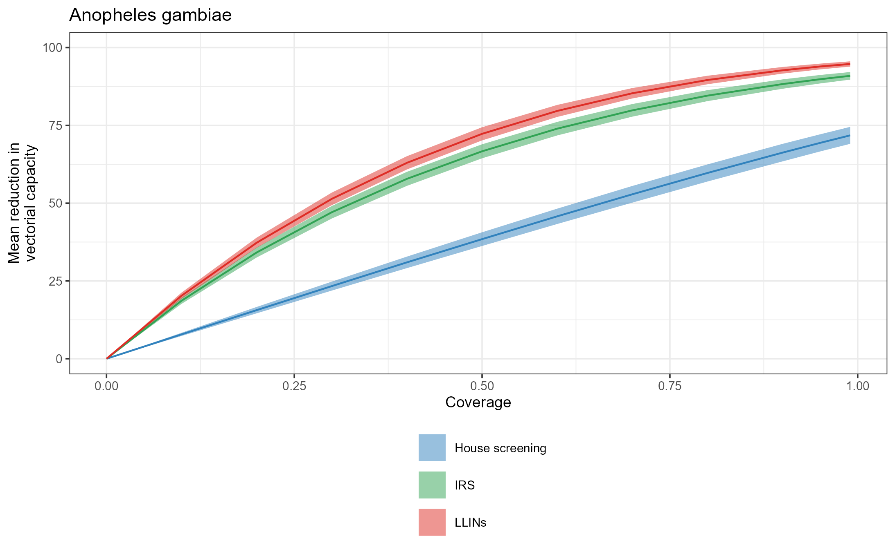
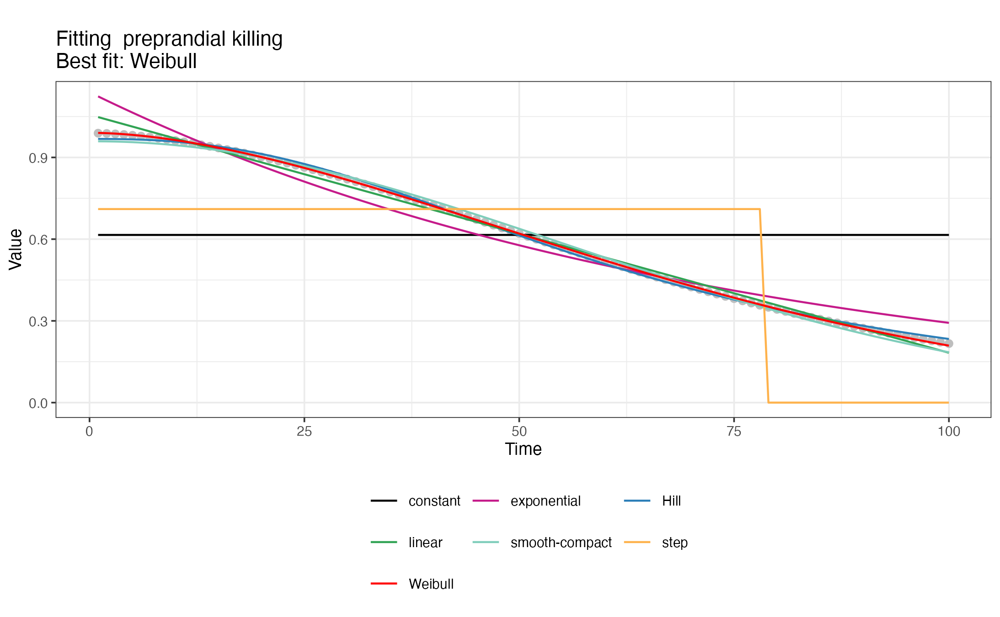
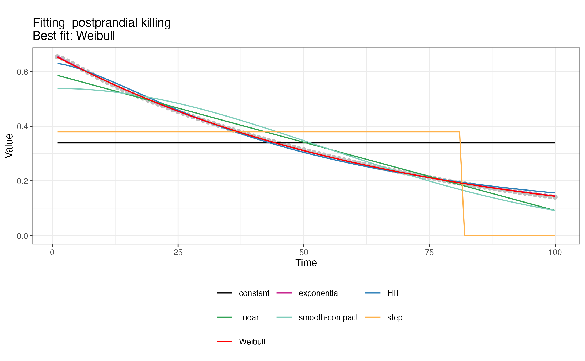

AnophelesModel.RmdThe AnophelesModel package can be used to parameterize a
model of the mosquito feeding cycle using data about mosquito bionomics
(entomological characteristics) and biting patterns, as well as human
activity and intervention effects. The different types of data have been
extracted from field studies and are included in the package. The model
infers the species-specific impact of various vector control
interventions on the vectorial capacity. The package can be used to
compare the impact of interventions for different mosquito species and
to generate parameterizations for the entomological and vector control
components of more complex models of malaria transmission dynamics.
The AnophelesModel package is based on a state
transition model of the feeding dynamics of a mosquito population biting
a population of hosts defined in (Chitnis, Smith,
and Steketee 2008). The model consists of a system of three
difference equations describing the dynamics in the numbers of
not-infected, infected, and infective mosquitoes, respectively. The
transitions between the individual steps of the cycle for a host
i are modeled through probabilities and summarized as
follows:
These probabilities (represented by the arrows in the diagram above) are in turn affected by mosquito ecology, human behavior and interventions as described in the following sections of this vignette.
This documentation provides information about the various use-cases of the package with examples. First, it gives an overview of the general analysis workflow. Next, it presents the contents of the package database and its data objects. Finally, it provides more detailed example use cases of the package functions. These examples include how to parameterize the embedded entomological model and evaluate the impact of various vector control interventions for different mosquito species and geographical locations. In addition, examples are shown about how to produce formatted inputs for downstream analyses with the OpenMalaria (Smith et al. 2006) individual-based model of malaria transmission dynamics.
With the main AnophelesModel() package function, the
user can run in one go the main analysis steps for parameterizing the
model of the mosquito feeding cycle (Chitnis,
Smith, and Steketee 2008) and estimate the reduction on the
vectorial capacity for various vector control interventions. These steps
are summarized in the diagram below, alongside the corresponding
functions:
The user can directly run the AnophelesModel() function
as an initial test run with a default analysis. By default, the
AnophelesModel() function performs the above steps
considering the parameters for An. gambiae in a Kenyan setting
and with default activity patterns for mosquitoes and humans. It
calibrates the entomological model, estimates the impact of indoor
residual spraying (IRS), long-lasting insecticide-treated nets (LLINs)
and house screening, then plots the average vectorial capacity for a
range of intervention coverages:
# load the AnophelesModel package
library(AnophelesModel)
# call main function with default values
results_gambiae = AnophelesModel()
#> [1] "Setting vector parameterization ..."
#> [1] "Setting activity patterns ..."
#> [1] "Setting host-specific parameterization ..."
#> [1] "Initializing entomological model ..."
#> [1] "Defining interventions effects ..."
#> [1] "Defining intervention effects for LLINs"
#> [1] "Using intervention effects available for model LLINs01"
#> [1] "Defining intervention effects for IRS"
#> [1] "Using intervention effects available for model IRS12"
#> [1] "IRS"
#> Warning in bs(input_times, degree = 3L, knots = numeric(0), Boundary.knots =
#> c(0.041666667, : some 'x' values beyond boundary knots may cause
#> ill-conditioned bases
#> Warning in bs(input_times, degree = 3L, knots = numeric(0), Boundary.knots =
#> c(0.041666667, : some 'x' values beyond boundary knots may cause
#> ill-conditioned bases
#> Warning in bs(input_times, degree = 3L, knots = numeric(0), Boundary.knots =
#> c(0.041666667, : some 'x' values beyond boundary knots may cause
#> ill-conditioned bases
#> [1] "Defining intervention effects for House_screening"
#> [1] "Using intervention effects available for model Screening01"
#> [1] "Calculating interventions impact ..."Output figure generated with the standard call of the AnophelesModel() function
In the section Estimating the impact of vector control interventions, we describe in detail how the user can access the functionalities of the package to customize the call to this function or set up their own workflow to run the analysis within the settings of interest.
The package includes a comprehensive, curated database describing
mosquito, human and intervention characteristics extracted after
processing publicly available field data and organized into multiple
data objects. Precisely, these objects include entomological (or
bionomics) parameters characterizing various Anopheles species,
their transitions in the mosquito feeding cycle, activity cycles of
humans and mosquitoes, as well as parameters estimated from experimental
hut studies describing the effects of various interventions. These
parameters are used together within the entomological model included in
the package to estimate the impact of interventions on the vectorial
capacity. All the data objects are directly accessible to the user after
loading the AnophelesModel package.
The entomological model in the AnophelesModel package
considers three classes of hosts (denoted with subscript i): humans
protected by interventions, non-protected humans, and animal hosts. Each
type of host determines specific transition probabilities between the
consecutive stages of the mosquito feeding cycle (e.g., interventions
such as nets will affect the probability of mosquito feeding on
protected humans). The object host_ent_param in the package
database contains, in absence of interventions, for human and animal
hosts, default probabilities that a mosquito completes the consecutive
stages of the feeding cycle in one night, conditional on having reached
each stage:
PBi: Probability that a mosquito bites the hostPCi: Probability that a mosquito finds a resting place
after bitingPDi: Probability that a mosquito survives the resting
phasePEi: Probability that a mosquito lays eggs and returns
to host-seekingKvi: Proportion of susceptible mosquitoes that become
infected after bitingThe values of the different probabilities in absence of interventions
are those proposed by (Chitnis, Smith, and
Steketee 2008) and (Briët et al.
2019). The host_ent_param object can be directly
used after loading the AnophelesModel package:
# Print the object
host_ent_param
#> species_name host PBi PCi PDi PEi Kvi
#> 1 Anopheles gambiae human 0.95 0.95 0.99 0.88 0.03
#> 2 Anopheles gambiae animal 0.95 0.95 0.99 0.88 0.00The object vec_ent_param contains bionomic
parameterizations for 57 Anopheles mosquito species and 17
complexes (families of species). These parameters have been estimated
using a Bayesian hierarchical model (Lemant et al, in preparation)
accounting for the phylogeny of the Anopheles genus and
informed by previously published entomological data (Massey et al. 2016), (Briët et al. 2019). Below, we provide an
exhaustive list of these parameters, their names reflecting the
notations used in (Chitnis, Smith, and Steketee
2008):
species_name: name of the mosquito speciesM: parous rate (proportion of host seeking mosquitoes
that have laid eggs at least once)M.sd: standard deviation of the parous rateChi: human blood index (proportion of mosquito blood
meals obtained from humans)A0: sac rate (proportion of mosquitoes who laid eggs
the same day)A0.sd: standard deviation of the sac ratezeta.3: relative availability of different non-human
hoststd: proportion of a day that a mosquito actively seeks
a hosttau: time required for a mosquito that has encountered
a host to return to host seekingts: duration of the extrinsic incubation period (time
required for sporozoites to develop in mosquitoes)endophily: proportion of indoor resting mosquitoesendophily.sd: standard deviation of the proportion of
indoor resting mosquitoesendophagy: proportion of indoor feeding mosquitoesendophagy.sd: standard deviation of the proportion of
indoor feeding mosquitoesThe vec_ent_param object is available upon loading the
AnophelesModel package and can be directly used:
# print the first entries of the vec_ent_param object
head(vec_ent_param)
#> species_name M M.sd Chi A0 A0.sd
#> 1 Anopheles arabiensis 0.5384622 0.003500333 0.4749833 0.5744970 0.01416144
#> 2 Anopheles gambiae 0.6134499 0.003819127 0.7947577 0.6419328 0.07280429
#> 3 Anopheles funestus 0.7565665 0.008446507 0.6243968 0.5899116 0.02053846
#> 4 Anopheles nili 0.6593646 0.006636148 0.6707206 0.4951913 0.05195866
#> 5 Anopheles moucheti 0.7268564 0.007056198 0.5828408 0.4951913 0.05195866
#> 6 Anopheles melas 0.6559240 0.001829826 0.5064544 0.5744970 0.01416144
#> zeta.3 td tau ts to endophily endophily.sd endophagy endophagy.sd
#> 1 1 0.33 3 10 5 0.7743085 0.01233146 0.6578578 0.004550147
#> 2 1 0.33 3 10 5 0.7743085 0.01233146 0.5604133 0.005056590
#> 3 1 0.33 3 10 5 0.7424881 0.08777241 0.5343858 0.005546232
#> 4 1 0.33 3 10 5 0.6944887 0.13455023 0.3439954 0.024569634
#> 5 1 0.33 3 10 5 0.6944887 0.13455023 0.3996990 0.042303792
#> 6 1 0.33 3 10 5 0.7743085 0.01233146 0.4920965 0.002755030For example, to retrieve the parameters for Anopheles albimanus:
vec_ent_param[vec_ent_param$species_name == "Anopheles albimanus", ]
#> species_name M M.sd Chi A0 A0.sd
#> 10 Anopheles albimanus 0.5577161 0.0322432 0.4223199 0.4951913 0.05195866
#> zeta.3 td tau ts to endophily endophily.sd endophagy endophagy.sd
#> 10 1 0.33 3 10 5 0.6944887 0.1345502 0.2293868 0.01502506The table activity_patterns contains mosquito biting
patterns as well as human sleeping activity information extracted from
(Sherrard-Smith et al. 2019) and (Briët et al. 2019). Each entry has the
following attributes:
id: entry IDspecies: can be “Homo sapiens” when the entries reflect
human activity, or names of mosquito species (e.g., “Anopheles gambiae”)
for mosquito biting patternssampling: can be one of the following:
IND: for entries representing the proportion of humans
indoorsBED: for entries representing the proportion of humans
in bedHBI: for entries representing the proportion of indoors
human bitingHBO: for entries representing the proportion of
outdoors human bitingABO: for entries representing the proportion of
outdoors animal bitingHB: for entries corresponding to the proportion of
human bitingcountry: country where the measurements were takensite: name of the geographical site where the
measurements were takenhour: hour of the day for which the sampling is
reported, ranging from 4pm until 8am, format: hh:mm_hh:mm (e.g.,
16:00_17:00)value: measurement valueThe object can be directly examined and its components retrieved for various purposes. For example, to retrieve all the human activity patterns collected from Kenya:
select_idx = activity_patterns$species == "Homo sapiens" &
activity_patterns$country == "Kenya"
Kenya_human_rhythms = activity_patterns[select_idx,]
head(Kenya_human_rhythms)
#> id species sampling country site hour value
#> 17 2 Homo sapiens IND Kenya Rachuonyo 16.00_17.00 0.0000000
#> 18 2 Homo sapiens IND Kenya Rachuonyo 17.00_18.00 0.1556667
#> 19 2 Homo sapiens IND Kenya Rachuonyo 18.00_19.00 0.3951833
#> 20 2 Homo sapiens IND Kenya Rachuonyo 19.00_20.00 1.0000000
#> 21 2 Homo sapiens IND Kenya Rachuonyo 20.00_21.00 1.0000000
#> 22 2 Homo sapiens IND Kenya Rachuonyo 21.00_22.00 1.0000000A pattern of interest can then be selected and displayed, for example:
library(ggplot2)
Rachuonyo_human_rhythms = Kenya_human_rhythms[which(Kenya_human_rhythms$id == 2),]
labels = substr(unique(Rachuonyo_human_rhythms$hour), 1, 5)
Rachuonyo_human_rhythms$hour = factor(labels, levels = labels )
ggplot(Rachuonyo_human_rhythms, aes(x=hour, y=value, group=site)) +
theme_light() + theme_linedraw() + theme_bw(base_size = 5) +
theme(legend.position = "bottom") +
geom_line(size=0.5) +
scale_x_discrete(name = "Time of the day (hh.mm)")+
guides(color = guide_legend(nrow = 2,byrow = TRUE)) +
labs(title = "Proportion of humans indoors in Rachuonyo, Kenya", fill="",
x="Time", y="Activity")
#> Warning: Using `size` aesthetic for lines was deprecated in ggplot2 3.4.0.
#> ℹ Please use `linewidth` instead.
#> This warning is displayed once every 8 hours.
#> Call `lifecycle::last_lifecycle_warnings()` to see where this warning was
#> generated.Example of human activity patterns in Rachuonyo, Kenya. The proportion of humans indoors (labeled IND) out of the total human population is displayed.
Another example extracting all the available biting behavior for Anopheles gambiae in Kenya:
select_idx = activity_patterns$species == "Anopheles gambiae" &
activity_patterns$country == "Kenya"
Kenya_gambiae_biting = activity_patterns[select_idx,]
head(Kenya_gambiae_biting)
#> id species sampling country site hour value
#> 1025 65 Anopheles gambiae HBI Kenya Rarieda 16.00_17.00 0.000000000
#> 1026 65 Anopheles gambiae HBI Kenya Rarieda 17.00_18.00 0.000000000
#> 1027 65 Anopheles gambiae HBI Kenya Rarieda 18.00_19.00 0.005608974
#> 1028 65 Anopheles gambiae HBI Kenya Rarieda 19.00_20.00 0.061698718
#> 1029 65 Anopheles gambiae HBI Kenya Rarieda 20.00_21.00 0.031250000
#> 1030 65 Anopheles gambiae HBI Kenya Rarieda 21.00_22.00 0.080929487The AnophelesModel package includes parameterisations
for estimating the effects of various vector control interventions.
These effects include reducing host availability, killing mosquitoes
over time since spraying, insecticidal and deterrent effects as
functions of insecticide content. The interventions modeled in the
package consist of different types of long lasting insecticide treated
nets (LLINs), indoor residual spraying (IRS), and house screening. All
the parameters for calculating these effects are provided within the
interventions_param object which consists of three
components, namely:
interventions_param$interventions_summary: an overview
and general information for all available intervention
parameterisations; this includes information about the active agent
(insecticide) used, the mosquito species for which the effects were
assessed in the experimental trials, the duration of the intervention
and details about the method and referencesinterventions_param$LLINs_params: an object including
parameterisations for various types of LLINsinterventions_param$IRS_params: a table containing
estimated insecticide decay for various types of IRSThe effects of LLINs are parameterized in terms of effectiveness in
reducing the availability of humans, and both pre- and post-prandial
killing of mosquitoes respectively. The effects are based on estimates
from experimental hut studies from (Randriamaherijaona et al. 2015). The decay of
these effects over time, in terms of attrition, use, physical and
chemical integrity is parameterized through a series of logistic models
described in (Briët et al. 2013), (Briët et al. 2019), and (Briet et al. 2020) using the data of President
Malaria Initiative (PMI) net durability studies (7 countries, 8 net
types, 23 combinations in all), and also from (Morgan et al. 2015). The object
interventions_param$LLINs_params contains all this
information and is composed of three tables:
interventions_param$LLINs_params$model_coeff: values
for coefficients of regression models estimating LLINs effects; these
models have been defined in (Briët et al.
2013), (Briët et al. 2019) and
(Briet et al. 2020)
interventions_param$LLINs_params$insecticide_c:
insecticide content for various types of nets summarized in (Briet et al. 2020)
interventions_param$LLINs_params$durability_estim:
information about the durability of LLINs (holed area, survival) across
time in different geographical locations also summarized in (Briet et al. 2020).Similarly, for IRS, a table with time series of effects in reducing
human availability and killing of mosquitoes as well as parameters
describing decay of effects over time is provided in
interventions_param$IRS_params.
The parameterization for House screening is based on the estimates from (Kirby et al. 2009) and described in (Briët et al. 2019), assuming a house entry reduction of 59%.
The data objects for interventions described above are directly
accessible upon loading the AnophelesModel package. For
example, for obtaining an overview of all LLINs interventions provided
with the AnophelesModel package:
print(interventions_param$interventions_summary[which(interventions_param$interventions_summary$Intervention == "LLINs"),])
#> Parameterisation Intervention Active_agent Species
#> 13 LLINs01 LLINs PN2 Akron Anopheles gambiae
#> 14 LLINs02 LLINs PN2 Zeneti Anopheles gambiae
#> 15 LLINs03 LLINs Malanville Anopheles gambiae
#> 16 LLINs04 LLINs Lambdacyhalothrin Anopheles albimanus
#> Reference Duration
#> 13 Randriamaherijaona et al. 2015 3
#> 14 Randriamaherijaona et al. 2015 3
#> 15 Randriamaherijaona et al. 2015 3
#> 16 Randriamaherijaona et al. 2015 3The package additionally contains helper functions for listing an
overview of the different data objects to help the user populate the
input arguments of the key functions in the general workflow (e.g., for
the AnophelesModel() function). These are:
list_all_species(): prints all the mosquito species for
which bionomic parameters are provided in the package databaselist_activity(): prints all the available activity
patternslist_interventions(): prints the available vector
control interventionslist_intervention_models(): prints the available
intervention parameterisation IDsget_net_types(): prints the available net types and the
countries where the studies have been conductedFurthermore, the package allows extracting more specific information about the durability of different types of LLINs such as holed area, survival and decay. These parameteres were estimated in the PMI net durability studies.
For example, to retrieve the decay characteristics for the DuraNet LLIN in Kenya:
# load the necesary packages
library(reshape)
DuraNet = get_net_decay(net_type = "DuraNet", country = "Kenya", insecticide_type = "DuraNet", n_ips = 100, duration = 3)
#> Warning in bs(net_age, degree = 3L, knots = numeric(0), Boundary.knots =
#> c(0.25, : some 'x' values beyond boundary knots may cause ill-conditioned bases
#> Warning in bs(net_age, degree = 3L, knots = numeric(0), Boundary.knots =
#> c(0.25, : some 'x' values beyond boundary knots may cause ill-conditioned basesThen, to plot these characteristics :
library(ggpubr)
# Plot the survival
ggplot(DuraNet, aes(x=time, y=survival)) + geom_point() +
theme_light() + theme_linedraw() + theme_bw() + ggtitle("Survival of the net")
# Plot the log of the holed area
ggplot(DuraNet, aes(x=time, y=logHoles)) + geom_point() +
theme_light() + theme_linedraw() + theme_bw() + ggtitle("Log holed area")
# Plot the insecticide content
ggplot(DuraNet, aes(x=time, y=insecticideContent)) + geom_point() +
theme_light() + theme_linedraw() + theme_bw() + ggtitle("Insecticide decay")
The mosquito bionomics, feeding cycle transitions, activity patterns
and intervention effects accessible from the AnophelesModel
database can be used to parameterise the model of the mosquito feeding
cycle and estimate the impact of interventions on the vectorial
capacity.
To define the mosquito specific entomological parameters in absence
of interventions, the user can either select existing parameterisations
from the AnophelesModel database, or provide a set of
custom values. For example, to choose an existing parameterisation for
Anopheles nili:
nili_ent_params = def_vector_params(mosquito_species = "Anopheles nili")
head(nili_ent_params)
#> $species_name
#> [1] Anopheles nili
#> 75 Levels: Albitarsis Annularis Anopheles aconitus ... Sundaicus
#>
#> $M
#> [1] 0.6593646
#>
#> $M.sd
#> [1] 0.006636148
#>
#> $Chi
#> [1] 0.6707206
#>
#> $A0
#> [1] 0.4951913
#>
#> $A0.sd
#> [1] 0.05195866To use a different parameterisation, first all the entomological
parameter values need to be provided in a data frame with the same
column names as the vec_ent_param object:
# Use own parameterisation
species_name = "Anopheles example"
M = 0.623
M.sd = 0
Chi = 0.939
A0 = 0.313
A0.sd = 0
zeta.3 = 1
td = 0.33
tau = 3
ts = 10
to = 5
endophily = 1
endophily.sd = 0
endophagy = 1
endophagy.sd = 0
custom_ent_params_table = as.data.frame(cbind.data.frame(species_name, M, M.sd, Chi,
A0, A0.sd, zeta.3, td,
tau, ts, to, endophily, endophily.sd, endophagy, endophagy.sd))Then, the data frame is provided to the function defining the vector parameters:
custom_ent_params = def_vector_params(mosquito_species = species_name, vector_table = custom_ent_params_table)
#> [1] "Object with vector entomological parameters defined using values provided by the user."
head(custom_ent_params)
#> $species_name
#> [1] "Anopheles example"
#>
#> $M
#> [1] 0.623
#>
#> $M.sd
#> [1] 0
#>
#> $Chi
#> [1] 0.939
#>
#> $A0
#> [1] 0.313
#>
#> $A0.sd
#> [1] 0Objects for host-specific entomological parameters (e.g., biting of human versus animal hosts, for details or other parameters see section Host-specific entomological parameters) in absence of interventions can be defined in a similar way as for the mosquito bionomics. To choose the default parameterisation from (Chitnis, Smith, and Steketee 2008):
default_host_params = def_host_params()
print(default_host_params)
#> $species_name
#> [1] "Anopheles gambiae" "Anopheles gambiae"
#>
#> $host
#> [1] "human" "animal"
#>
#> $PBi
#> [1] 0.95 0.95
#>
#> $PCi
#> [1] 0.95 0.95
#>
#> $PDi
#> [1] 0.99 0.99
#>
#> $PEi
#> [1] 0.88 0.88
#>
#> $Kvi
#> [1] 0.03 0.00For using a different, custom parameterisation, first we need to
build a data frame with the same structure as
host_ent_params:
species_name = "Anopheles example"
host = c("human", "animal")
PBi = c(0.67, 0.44)
PCi = c(0.33, 0.434)
PDi = c(0.647, 0.344)
PEi = c(0.672, 0.214)
Kvi = c(0.52, 0.314)
custom_params_tab = cbind.data.frame(species_name, host, PBi, PCi, PDi, PEi, Kvi)Afterwards, we can provide this data frame to the relevant function for defining the host parameters:
custom_host_params = def_host_params(mosquito_species = species_name, host_table = custom_params_tab)
#> [1] "Using host-specific entomological parameters provided by the user."
print(custom_host_params)
#> $species_name
#> [1] "Anopheles example" "Anopheles example"
#>
#> $host
#> [1] "human" "animal"
#>
#> $PBi
#> [1] 0.67 0.44
#>
#> $PCi
#> [1] 0.330 0.434
#>
#> $PDi
#> [1] 0.647 0.344
#>
#> $PEi
#> [1] 0.672 0.214
#>
#> $Kvi
#> [1] 0.520 0.314To facilitate definition of human and mosquito activity patterns, the
AnophelesModel package comes with inbuilt default values
for Anopheles gambiae in Kenya and Anopheles albimanus
in Haiti. The user can choose other patterns from the package database
(344 entries) by using the entry ID of each time series (id
column of object activity_patterns). Furthermore,
customized patterns can be defined by directly providing the time series
values. Here are some examples for these different use cases:
To use default activity patterns from Kenya (human activity measured in the Rachuonyo and Rarieda districts):
activity_p = def_activity_patterns(activity = "default_Anopheles_gambiae")
print(activity_p)
#> $HBI
#> [1] 0.000000000 0.000000000 0.000491400 0.000491400 0.005896806 0.007862408
#> [7] 0.028009828 0.048157248 0.068304668 0.066339066 0.062899263 0.062899263
#> [13] 0.070270270 0.077641278 0.000000000 0.000000000
#>
#> $HBO
#> [1] 0.000000000 0.000000000 0.000982801 0.000982801 0.003931204 0.025061425
#> [7] 0.042260442 0.056019656 0.073710074 0.077149877 0.077149877 0.073710074
#> [13] 0.038329238 0.031449631 0.000000000 0.000000000
#>
#> $humans_indoors
#> [1] 0.00000000 0.28380952 0.61904762 0.84761905 0.96190476 1.00000000
#> [7] 1.00000000 1.00000000 1.00000000 1.00000000 1.00000000 1.00000000
#> [13] 0.96190476 0.00952381 0.00000000 0.00000000
#>
#> $humans_in_bed
#> [1] 0.0000000 0.0000000 0.0000000 0.2271333 0.6666333 1.0000000 1.0000000
#> [8] 1.0000000 1.0000000 1.0000000 1.0000000 1.0000000 0.8833167 0.2006667
#> [15] 0.0000000 0.0000000To select activity patterns from the database based on the entry IDs for Anopheles arabiensis in Kenya, Ahero disctrict:
activity_list = NULL
activity_list$HBI = 34
activity_list$HBO = 165
activity_list$humans_indoors = 4
activity_list$humans_in_bed = 24
activity_p2 = def_activity_patterns(activity_list)
print(activity_p2)
#> $HBI
#> [1] 0.00000000 0.00000000 0.00000000 0.00000000 0.01823282 0.02384292
#> [7] 0.06591865 0.04908836 0.04067321 0.12201964 0.14866760 0.08695652
#> [13] 0.10939691 0.08555400 0.00000000 0.00000000
#>
#> $HBO
#> [1] 0.000000000 0.000000000 0.001402525 0.001402525 0.004207574 0.007012623
#> [7] 0.011220196 0.011220196 0.014025245 0.007012623 0.046283310 0.058906031
#> [13] 0.056100982 0.030855540 0.000000000 0.000000000
#>
#> $humans_indoors
#> [1] 0.00000000 0.28380952 0.61904762 0.84761905 0.96190476 1.00000000
#> [7] 1.00000000 1.00000000 1.00000000 1.00000000 1.00000000 1.00000000
#> [13] 0.96190476 0.00952381 0.00000000 0.00000000
#>
#> $humans_in_bed
#> [1] 0.0000000 0.0000000 0.0000000 0.2271333 0.6666333 1.0000000 1.0000000
#> [8] 1.0000000 1.0000000 1.0000000 1.0000000 1.0000000 0.8833167 0.2006667
#> [15] 0.0000000 0.0000000To use custom activity patterns by specifying the different time series, for example for An. albimanus in Haiti available from (Briët et al. 2019):
# Briet et al 2019, Table S5. Biting rhythm of An. albimanus in Haiti, Dame Marie
HBI = c(0.22, 0.21, 0.22, 0.10, 0.13, 0.17, 0.08, 0.12, 0.03, 0.12, 0.17, 0.18, 0.25)
HBO = c(0.25, 0.35, 0.37, 0.33, 0.36, 0.32, 0.13, 0.14, 0.09, 0.15, 0.36, 0.23, 0.25)
# Human activity in Haiti from Briet et al 2019, Knutson et al. 2014
humans_in_bed = c(5.628637, 14.084496, 28.558507, 47.761203, 67.502964, 83.202297, 92.736838, 96.734455, 96.637604, 92.983136, 85.264515, 73.021653, 57.079495)/100
humans_indoors = c(5.628637, 14.084496, 28.558507, 47.761203, 67.502964, 83.202297, 92.736838, 96.734455, 96.637604, 92.983136, 85.264515, 73.021653, 57.079495)/100
custom_params = as.data.frame(cbind(HBI, HBO, humans_indoors,humans_in_bed ))
custom_activity_obj = def_activity_patterns(custom_params)
print(custom_activity_obj)
#> $HBI
#> [1] 0.22 0.21 0.22 0.10 0.13 0.17 0.08 0.12 0.03 0.12 0.17 0.18 0.25
#>
#> $HBO
#> [1] 0.25 0.35 0.37 0.33 0.36 0.32 0.13 0.14 0.09 0.15 0.36 0.23 0.25
#>
#> $humans_indoors
#> [1] 0.05628637 0.14084496 0.28558507 0.47761203 0.67502964 0.83202297
#> [7] 0.92736838 0.96734455 0.96637604 0.92983136 0.85264515 0.73021653
#> [13] 0.57079495
#>
#> $humans_in_bed
#> [1] 0.05628637 0.14084496 0.28558507 0.47761203 0.67502964 0.83202297
#> [7] 0.92736838 0.96734455 0.96637604 0.92983136 0.85264515 0.73021653
#> [13] 0.57079495Once the vector, host and activity parameters have been defined, the entomological model can be initialized and calibrated accordingly. In this step, the death rate and the availability to mosquitoes for each host type are estimated. For a description of how these two parameters are estimated, see (Chitnis, Smith, and Steketee 2008).
First, the sizes of the host and mosquito populations need to be defined:
# Define size of the host and mosquito population
host_pop = 2000
vec_pop = 10000Then, to initialize the entomological model and build the model object:
model_params = build_model_obj(custom_ent_params, default_host_params, custom_activity_obj, host_pop)
# Print the calculated mosquito death rate
print(model_params$host_params$muvA)
#> [1] 0.2362186
# Print the estimated availability to mosquitoes for each host type
print(model_params$host_params$alphai)
#> [1] 8.464341e-04 5.498667e-05In the AnophelesModel package, the interventions and
their characteristics are specified through a list of intervention
objects. A detailed description of how the intervention objects are
specified can be obtained by using the command
?def_interventions_effects. To facilitate definition of
these objects, the package contains a list of intervention object
examples for each intervention type included in the
intervention_obj_examples list.
The intervention_obj_examples list contains three
examples of interventions : LLIN, IRS and House screening,
respectively:
print(intervention_obj_examples)
#> $LLINs_example
#> $LLINs_example$id
#> [1] "LLINs"
#>
#> $LLINs_example$description
#> [1] "LLINs"
#>
#> $LLINs_example$parameterisation
#> [1] "LLINs01"
#>
#> $LLINs_example$LLIN_type
#> [1] "Default"
#>
#> $LLINs_example$LLIN_insecticide
#> [1] "Default"
#>
#> $LLINs_example$LLIN_country
#> [1] "Kenya"
#>
#>
#> $IRS_example
#> $IRS_example$id
#> [1] "IRS"
#>
#> $IRS_example$description
#> [1] "IRS"
#>
#> $IRS_example$parameterisation
#> [1] "IRS12"
#>
#>
#> $Screening_example
#> $Screening_example$id
#> [1] "House_screening"
#>
#> $Screening_example$description
#> [1] "House screening"
#>
#> $Screening_example$parameterisation
#> [1] "Screening01"Except for the house screening where only the id and
description attributes are required, to use the IRS and
LLIN interventions included in the package, the user needs to provide
the parameterisation ID (e.g., LLINs01, IRS01). A list of all package
intervention parameterisations and their IDs can be obtained with the
list_intervention_models() command. The examples from
intervention_obj_examples can be adapted to the user’s
needs to pick other available parameterisations and intervention
characteristics available within the package. For example, to select a
different IRS parameterisation, we can modify the
parameterisation attribute of the IRS example:
new_IRS = intervention_obj_examples$IRS_example
new_IRS$description = "Permethrin IRS"
new_IRS$parameterisation = "IRS16"then we can concatenate the new intervention object to the list with intervention examples:
Once the intervention parameterisations have been defined, the user needs to specify the intervention deployment coverages and a number of time points. The duration of each intervention will be evenly split across the time points and the intervention effects will be calculated at each time point.
list_interv = new_intervention_list
coverages = c(seq(0, 1, by = 0.1))
n_ip = 100
# Calculate the intervention effects:
intervention_vec = def_interventions_effects(list_interv, model_params, n_ip)
#> [1] "Defining intervention effects for LLINs"
#> [1] "Using intervention effects available for model LLINs01"
#> [1] "Defining intervention effects for IRS"
#> [1] "Using intervention effects available for model IRS12"
#> [1] "IRS"
#> Warning in bs(input_times, degree = 3L, knots = numeric(0), Boundary.knots =
#> c(0.041666667, : some 'x' values beyond boundary knots may cause
#> ill-conditioned bases
#> Warning in bs(input_times, degree = 3L, knots = numeric(0), Boundary.knots =
#> c(0.041666667, : some 'x' values beyond boundary knots may cause
#> ill-conditioned bases
#> Warning in bs(input_times, degree = 3L, knots = numeric(0), Boundary.knots =
#> c(0.041666667, : some 'x' values beyond boundary knots may cause
#> ill-conditioned bases
#> [1] "Defining intervention effects for House_screening"
#> [1] "Using intervention effects available for model Screening01"
#> [1] "Defining intervention effects for IRS"
#> [1] "Using intervention effects available for model IRS16"
#> [1] "IRS"The effects of the interventions are adjusted according to indoor and outdoor human exposure to mosquitoes. The user can calculate the human exposure parameters using the following function:
in_out_exp = get_in_out_exp(activity_cycles = custom_activity_obj, vec_p = custom_ent_params)
print(in_out_exp)
#> $Exposure_Indoor_total
#> [1] 1
#>
#> $Exposure_Outdoor_total
#> [1] 0
#>
#> $Exposure_Indoor_whileinbed
#> [1] 1
#>
#> $Exposure_Outdoor_whileinbed
#> [1] 0
#>
#> $indoor_resting
#> [1] 1Once all the intervention effects have been defined, their impact on the vectorial capacity can be estimated (using equation 20 from (Chitnis, Smith, and Steketee 2008)) :
impacts = calculate_impact(intervention_vec, coverages, model_params,
vec_pop, n_ip)The resulting vectorial capacity is calculated and aggregated across the previously-specified time points which are uniformly-distributed across the duration of an intervention. To display the average vectorial capacity for various coverages:
p = plot_impact_species(impacts, "VC_red")
plot(p)Impact of interventions on vectorial capacity.
The variability in the entomological parameters for each mosquito
species can be accounted for when calculating the impact of
interventions on the vectorial capacity. To do so, the standard
deviation values of the entomological parameters (namely parameters
M.sd, A0.sd, endophily.sd and
endophagy.sd in the vec_ent_param object) are
used to create a confidence interval defined as the mean value +/- two
standard deviations. Using latin hypercube sampling (Stein 1987), a set of samples are uniformly
drawn from the multi-dimensional parameter space defined by the
confidence intervals. Then, the average vectorial capacity is computed
for each of these samples and the resulting confidence interval for the
vectorial capacity is represented by the mean value +/- two standard
deviations. This sampling-based approach is included in the
calculate_impact_var() function to estimate the confidence
interval for the reported mean vectorial capacity. In the example below,
in the interest of execution time, only 10 samples have been used to
estimate the confidence intervals of the vectorial capacity:
impact_gambiae = calculate_impact_var(mosquito_species = "Anopheles gambiae",
activity_patterns = "default_Anopheles_gambiae",
interventions = intervention_obj_examples,
n_sample_points = 10,
plot_result = FALSE)
#> [1] "IRS"
#> Warning in bs(input_times, degree = 3L, knots = numeric(0), Boundary.knots =
#> c(0.041666667, : some 'x' values beyond boundary knots may cause
#> ill-conditioned bases
#> Warning in bs(input_times, degree = 3L, knots = numeric(0), Boundary.knots =
#> c(0.041666667, : some 'x' values beyond boundary knots may cause
#> ill-conditioned bases
#> Warning in bs(input_times, degree = 3L, knots = numeric(0), Boundary.knots =
#> c(0.041666667, : some 'x' values beyond boundary knots may cause
#> ill-conditioned bases
#> [1] "IRS"
#> Warning in bs(input_times, degree = 3L, knots = numeric(0), Boundary.knots =
#> c(0.041666667, : some 'x' values beyond boundary knots may cause
#> ill-conditioned bases
#> Warning in bs(input_times, degree = 3L, knots = numeric(0), Boundary.knots =
#> c(0.041666667, : some 'x' values beyond boundary knots may cause
#> ill-conditioned bases
#> Warning in bs(input_times, degree = 3L, knots = numeric(0), Boundary.knots =
#> c(0.041666667, : some 'x' values beyond boundary knots may cause
#> ill-conditioned bases
#> [1] "IRS"
#> Warning in bs(input_times, degree = 3L, knots = numeric(0), Boundary.knots =
#> c(0.041666667, : some 'x' values beyond boundary knots may cause
#> ill-conditioned bases
#> Warning in bs(input_times, degree = 3L, knots = numeric(0), Boundary.knots =
#> c(0.041666667, : some 'x' values beyond boundary knots may cause
#> ill-conditioned bases
#> Warning in bs(input_times, degree = 3L, knots = numeric(0), Boundary.knots =
#> c(0.041666667, : some 'x' values beyond boundary knots may cause
#> ill-conditioned bases
#> [1] "IRS"
#> Warning in bs(input_times, degree = 3L, knots = numeric(0), Boundary.knots =
#> c(0.041666667, : some 'x' values beyond boundary knots may cause
#> ill-conditioned bases
#> Warning in bs(input_times, degree = 3L, knots = numeric(0), Boundary.knots =
#> c(0.041666667, : some 'x' values beyond boundary knots may cause
#> ill-conditioned bases
#> Warning in bs(input_times, degree = 3L, knots = numeric(0), Boundary.knots =
#> c(0.041666667, : some 'x' values beyond boundary knots may cause
#> ill-conditioned bases
#> [1] "IRS"
#> Warning in bs(input_times, degree = 3L, knots = numeric(0), Boundary.knots =
#> c(0.041666667, : some 'x' values beyond boundary knots may cause
#> ill-conditioned bases
#> Warning in bs(input_times, degree = 3L, knots = numeric(0), Boundary.knots =
#> c(0.041666667, : some 'x' values beyond boundary knots may cause
#> ill-conditioned bases
#> Warning in bs(input_times, degree = 3L, knots = numeric(0), Boundary.knots =
#> c(0.041666667, : some 'x' values beyond boundary knots may cause
#> ill-conditioned bases
#> [1] "IRS"
#> Warning in bs(input_times, degree = 3L, knots = numeric(0), Boundary.knots =
#> c(0.041666667, : some 'x' values beyond boundary knots may cause
#> ill-conditioned bases
#> Warning in bs(input_times, degree = 3L, knots = numeric(0), Boundary.knots =
#> c(0.041666667, : some 'x' values beyond boundary knots may cause
#> ill-conditioned bases
#> Warning in bs(input_times, degree = 3L, knots = numeric(0), Boundary.knots =
#> c(0.041666667, : some 'x' values beyond boundary knots may cause
#> ill-conditioned bases
#> [1] "IRS"
#> Warning in bs(input_times, degree = 3L, knots = numeric(0), Boundary.knots =
#> c(0.041666667, : some 'x' values beyond boundary knots may cause
#> ill-conditioned bases
#> Warning in bs(input_times, degree = 3L, knots = numeric(0), Boundary.knots =
#> c(0.041666667, : some 'x' values beyond boundary knots may cause
#> ill-conditioned bases
#> Warning in bs(input_times, degree = 3L, knots = numeric(0), Boundary.knots =
#> c(0.041666667, : some 'x' values beyond boundary knots may cause
#> ill-conditioned bases
#> [1] "IRS"
#> Warning in bs(input_times, degree = 3L, knots = numeric(0), Boundary.knots =
#> c(0.041666667, : some 'x' values beyond boundary knots may cause
#> ill-conditioned bases
#> Warning in bs(input_times, degree = 3L, knots = numeric(0), Boundary.knots =
#> c(0.041666667, : some 'x' values beyond boundary knots may cause
#> ill-conditioned bases
#> Warning in bs(input_times, degree = 3L, knots = numeric(0), Boundary.knots =
#> c(0.041666667, : some 'x' values beyond boundary knots may cause
#> ill-conditioned bases
#> [1] "IRS"
#> Warning in bs(input_times, degree = 3L, knots = numeric(0), Boundary.knots =
#> c(0.041666667, : some 'x' values beyond boundary knots may cause
#> ill-conditioned bases
#> Warning in bs(input_times, degree = 3L, knots = numeric(0), Boundary.knots =
#> c(0.041666667, : some 'x' values beyond boundary knots may cause
#> ill-conditioned bases
#> Warning in bs(input_times, degree = 3L, knots = numeric(0), Boundary.knots =
#> c(0.041666667, : some 'x' values beyond boundary knots may cause
#> ill-conditioned bases
#> [1] "IRS"
#> Warning in bs(input_times, degree = 3L, knots = numeric(0), Boundary.knots =
#> c(0.041666667, : some 'x' values beyond boundary knots may cause
#> ill-conditioned bases
#> Warning in bs(input_times, degree = 3L, knots = numeric(0), Boundary.knots =
#> c(0.041666667, : some 'x' values beyond boundary knots may cause
#> ill-conditioned bases
#> Warning in bs(input_times, degree = 3L, knots = numeric(0), Boundary.knots =
#> c(0.041666667, : some 'x' values beyond boundary knots may cause
#> ill-conditioned bases
plot_impact_var("Anopheles gambiae", impact_gambiae)Impact of interventions on vectorial capacity including the variability in the entomological parameters specific to the mosquito species.
The package AnophelesModel can be used to create XML
snippets containing parameterisations for the entomology and generic
vector control interventions (GVI) components of OpenMalaria
experiments. These snippets can then be incorporated in the base XML
files describing the setup for OpenMalaria individual-based simulations.
There are two main categories of XML snippets that can be generated with
the package:
<mosq> and <nonHumanHosts>
snippets containing entomological parameters<GVI> snippets with parameters describing the
effects of interventionsFor example, to generate the <mosq> and
<nonHumanHosts> snippets for Anopheles
nili:
entomology_xml = get_OM_ento_snippet(nili_ent_params, default_host_params)
print(entomology_xml)
#> $mosq_snippet
#> <mosq minInfectedThreshold="0.01">
#> <mosqRestDuration value="2"/>
#> <extrinsicIncubationPeriod value="10"/>
#> <mosqLaidEggsSameDayProportion value="0.495191314314922"/>
#> <mosqSeekingDuration value="3"/>
#> <mosqSurvivalFeedingCycleProbability value="0.659364630942942"/>
#> <availability/>
#> <mosqProbBiting mean="0.95" variance="0"/>
#> <mosqProbFindRestSite mean="0.95" variance="0"/>
#> <mosqProbResting mean="0.99" variance="0"/>
#> <mosqProbOvipositing mean="0.88"/>
#> <mosqHumanBloodIndex mean="0.670720617095951"/>
#> </mosq>
#>
#> $nonHumanHosts_snippet
#> <nonHumanHosts name="unprotectedAnimals">
#> <mosqRelativeEntoAvailability value="1"/>
#> <mosqProbBiting value="0.95"/>
#> <mosqProbFindRestSite value="0.95"/>
#> <mosqProbResting value="0.99"/>
#> </nonHumanHosts>To generate the <GVI> snippets with deterrency,
pre- and post-prandial effects of interventions, a set of 7 decay
functions are fitted to the time series with intervention effects
calculated previously with def_interventions_effects() and
the best fit is chosen. The package also produces visualizations of the
different decay fits. For a detailed description of the fitted decay
functions, check the description
in the OpenMalaria wiki.
GVI_snippets = get_OM_GVI_snippet("Anopheles example", impacts$interventions_vec$LLINs_example,
100, plot_f = TRUE)
#> [1] "Creating snippet for deterrency"
#> [1] "Exponential decay fitted successfully."
#> [1] "Weibull decay fitted successfully."
#> [1] "Hill decay fitted successfully."
#> [1] "Linear decay fitted successfully."
#> [1] "Smooth-compact decay fitted successfully."
#> [1] "Best decay fit:"
#> $decay
#> [1] "Weibull"
#>
#> $RSS
#> [1] 0.0001349526
#>
#> $params
#> a L k
#> 0.7954385 8.7559914 0.7016281
#>
#> [1] "Creating snippet for preprandial killing"
#> [1] "Exponential decay fitted successfully."
#> [1] "Weibull decay fitted successfully."
#> [1] "Hill decay fitted successfully."
#> [1] "Linear decay fitted successfully."
#> [1] "Smooth-compact decay fitted successfully."
#> [1] "Best decay fit:"
#> $decay
#> [1] "Weibull"
#>
#> $RSS
#> [1] 0.0007299102
#>
#> $params
#> a L k
#> 0.9901066 1.8670517 1.7217937
#>
#> [1] "Creating snippet for postprandial killing"
#> [1] "Exponential decay fitted successfully."
#> [1] "Weibull decay fitted successfully."
#> [1] "Hill decay fitted successfully."
#> [1] "Linear decay fitted successfully."
#> [1] "Smooth-compact decay fitted successfully."
#> [1] "Best decay fit:"
#> $decay
#> [1] "Weibull"
#>
#> $RSS
#> [1] 0.0004681643
#>
#> $params
#> a L k
#> 0.6570024 1.3772267 1.0142439